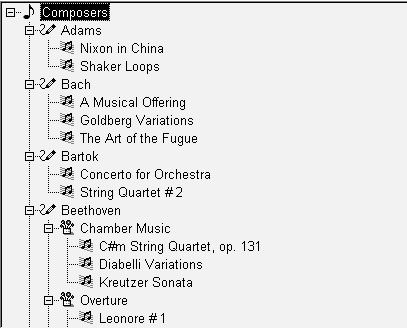

TreeView controls provide a way to represent hierarchical relationships within a list. The TreeView provides a standard interface for expanding and collapsing branches of a hierarchy:

You use TreeViews in windows and custom visual user objects. Choose a TreeView instead of a ListBox or ListView when your information is more complex than a list of similar items and when levels of information have a one-to-many relationship. Choose a TreeView instead of a DataWindow control when your user will want to expand and collapse the list using the standard TreeView interface.
Although items in a TreeView can be a single, flat list like the report view of a ListView, you tap the power of a TreeView when items have a one-to-many relationship two or more levels deep. For example, your list might have one or several parent categories with child items within each category. Or the list might have several levels of subcategories before getting to the end of a branch in the hierarchy:
Root
Category 1
Subcategory 1a
Detail
Detail
Subcategory 1b
Detail
Detail
Category 2
Subcategory 2a
Detail
You do not have to have the same number of levels in every branch of the hierarchy if your data requires more levels of categorization in some branches. However, programming for the TreeView is simpler if the items at a particular level are the same type of item, rather than subcategories in some branches and detail items in others.
For example, in scripts you might test the level of an item to determine appropriate actions. You can call the SetLevelPictures function to set pictures for all the items at a particular level.
For most of the list types in PowerBuilder, you can add items in the painter or in a script, but for a TreeView, you have to write a script. Generally, you will populate the first level (the root level) of the TreeView when its window opens. When the user wants to view a branch, a script for the TreeView's ItemPopulate event can add items at the next levels.
The data for items can be hard-coded in the script, but it is more likely that you will use the user's own input or a database for the TreeView's content. Because of the one-to-many relationship of an item to its child items, you might use several tables in a database to populate the TreeView.
For an example using DataStores, see "Using DataWindow information to populate a TreeView".
Pictures are associated with individual items in a TreeView. You identify pictures you want to use in the control's picture lists and then associate the index of the picture with an item. Generally, pictures are not unique for each item. Pictures provide a way to categorize or mark items within a level. To help the user understand the data, you might:
Pictures are not required You do not have to use pictures if they do not convey useful information to the user. Item labels and the levels of the hierarchy may provide all the information the user needs.
You can control the appearance of the TreeView by setting property values. Properties that affect the overall appearance are shown in Table 8-1.
For more information about these properties, see Objects and Controls .
Basic TreeView functionality allows users to edit labels, delete items, expand and collapse branches, and sort alphabetically, without any scripting on your part. For example, the user can click a second time on a selected item to edit it, or press the Delete key to delete an item. If you do not want to allow these actions, properties let you disable them.
You can customize any of these basic actions by writing scripts. Events associated with the basic actions let you provide validation or prevent an action from completing. You can also implement other features such as adding items, dragging items, and performing customized sorting.
In PowerBuilder 7 and later releases, PowerBuilder uses Microsoft controls for ListView and Treeview controls. The events that fire when the right mouse button is clicked are different from earlier releases.
When you release the right mouse button, the pbm_rbuttonup event does not fire. The stock RightClicked! event for a TreeView control, pbm_tvnrclickedevent, fires when the button is released.
When you click the right mouse button on an unselected TreeView item, focus returns to the previously selected TreeView item when you release the button. To select the new item, insert this code in the pbm_tvnrclickedevent script before any code that acts on the selected item:
this.SelectItem(handle)
When you right double-click, only the pbm_rbuttondblclk event fires. In previous releases, both the pbm_rbuttondblclk and pbm_tvnrdoubleclick events fired.